PAN10xx EVB 介绍¶
1 概述¶
本文为 PAN10xx Evaluation Board (EVB) 开发板介绍，包括相关板级硬件模块、各模块在EVB板上的位置、以及对应电路原理图，旨在帮助开发者快速了解PAN10xx EVB开发板。
PAN10xx EVB开发板由核心板、底板两大部分组成，其中：
核心板提供了PAN10xx SoC的最小系统，主要包含有PAN10xx SoC芯片、32MHz高速晶振、32768Hz低速晶振、复位按钮、板载天线以及一些必要的无源器件。
底板上提供了诸多PAN10xx SoC支持的外设模块，其中包含：
电源管理系统、USB_Type-C转串口模块、RGB三色灯、三轴加速度传感器、外部SPI FLASH、无源蜂鸣器、独立按键、可调电阻、红外模块、独立LED灯等等；
对外接口有USB-Type-C接口、USB_Type-C转串口接口、鼠标接口，矩阵按键接口、OLED显示屏接口、全GPIO测试接口等，如下图所示
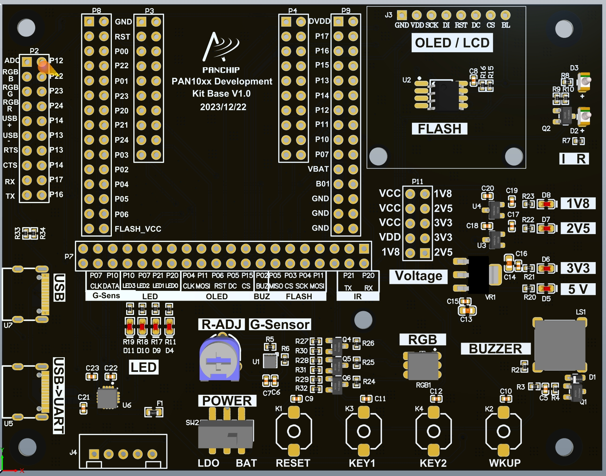
PAN10xx EVB V1.0 3D图¶
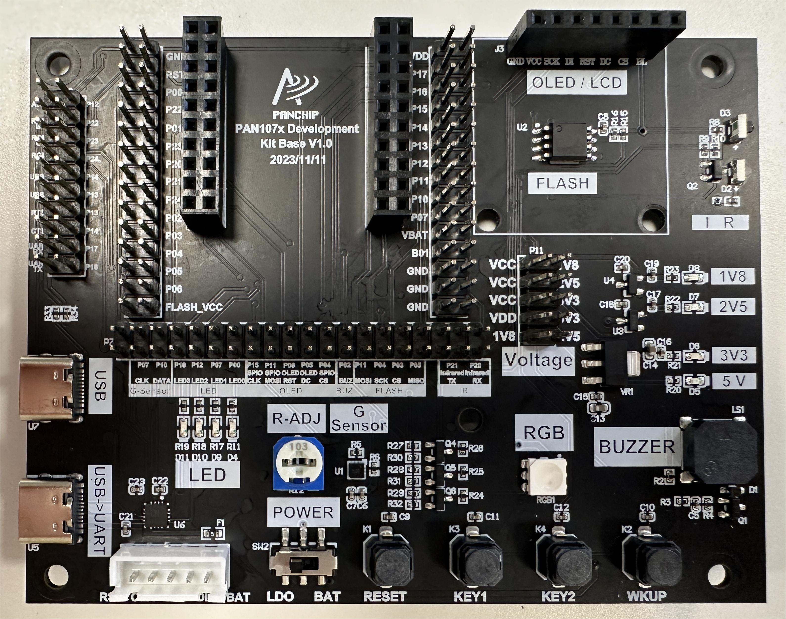
PAN10xx EVB V1.0 实物图¶
2 开发板硬件资源¶
2.1 PAN10xx最小系统¶
PAN10xx最小系统由核心板和转接板组成。最小系统以模块形式嵌入开发板底板中，可分离式设计方便单独调试及应用于其它场景，如下图所示：
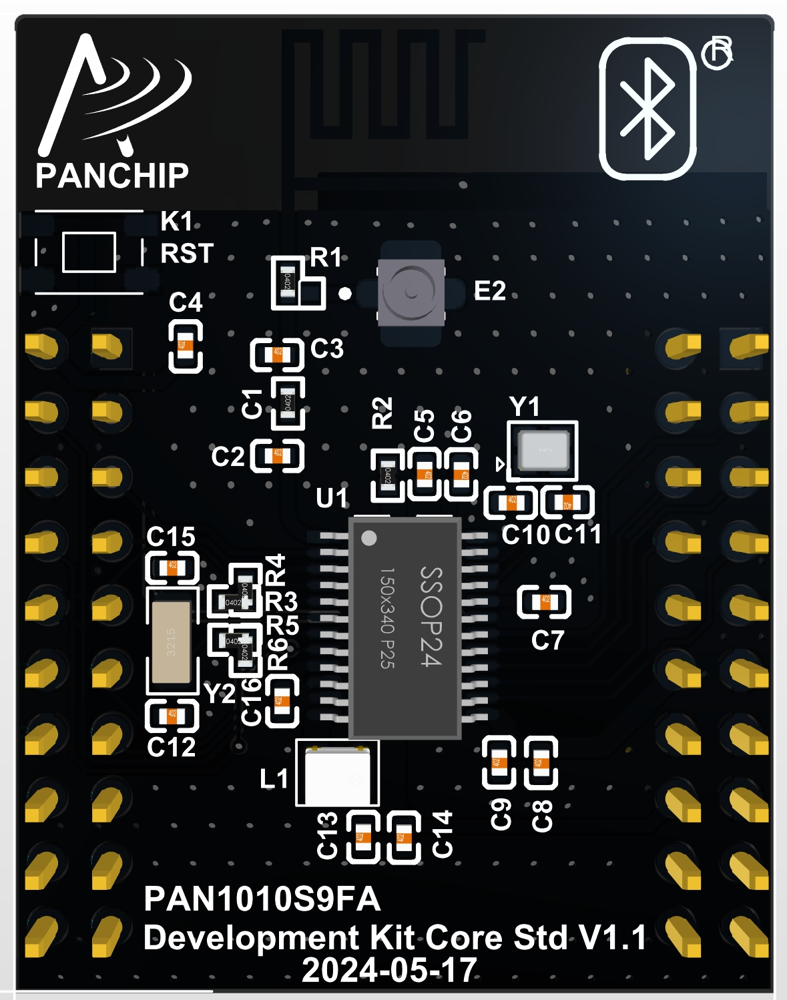
PAN1010S9FA最小系统板三维图顶部¶
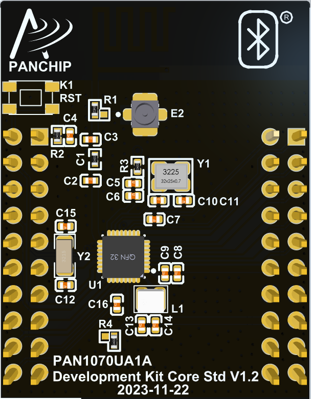
PAN1070UA1A最小系统板三维图顶部¶
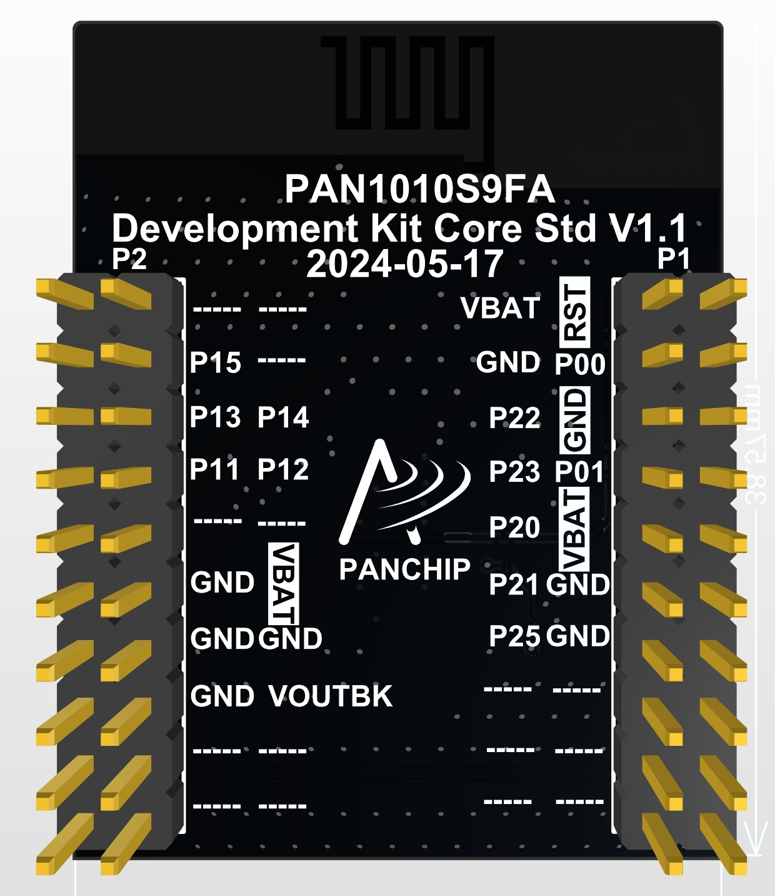
PAN1010S9FA最小系统板三维图底部¶
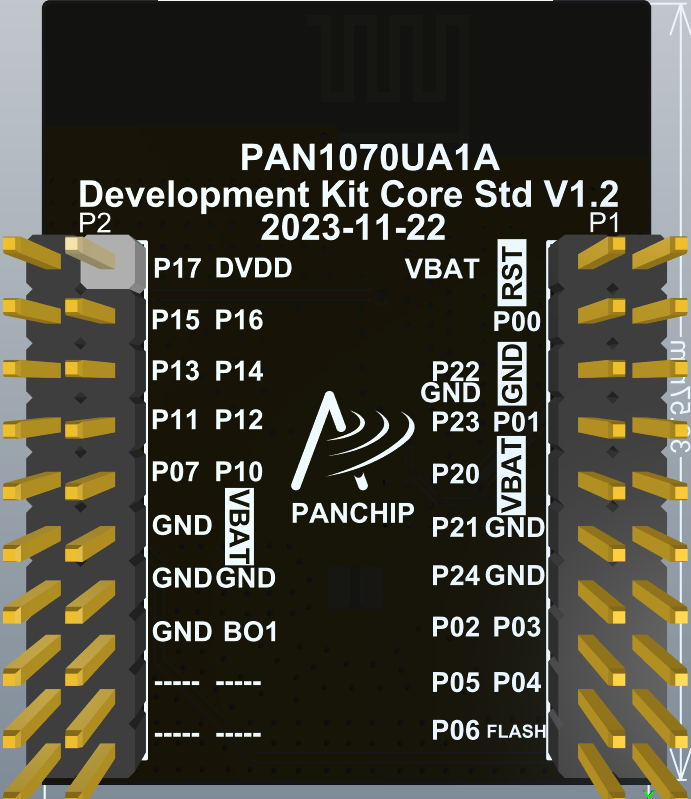
PAN1070UA1A最小系统板三维图底部¶
核心板搭载PAN10xx主控芯片、外部32M晶振、板载天线等，通过标准间距2.54mm双排针引出了所有GPIO，PAN10xx核心板原理图如下所示：
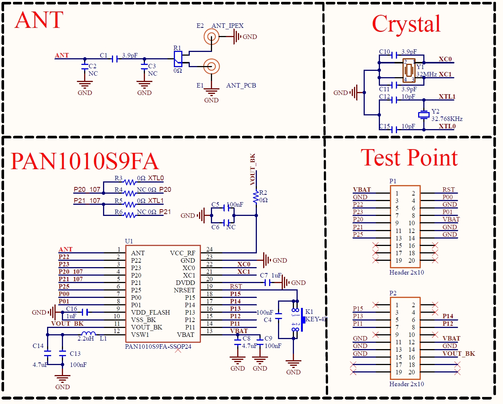
SSOP24封装核心板原理图¶
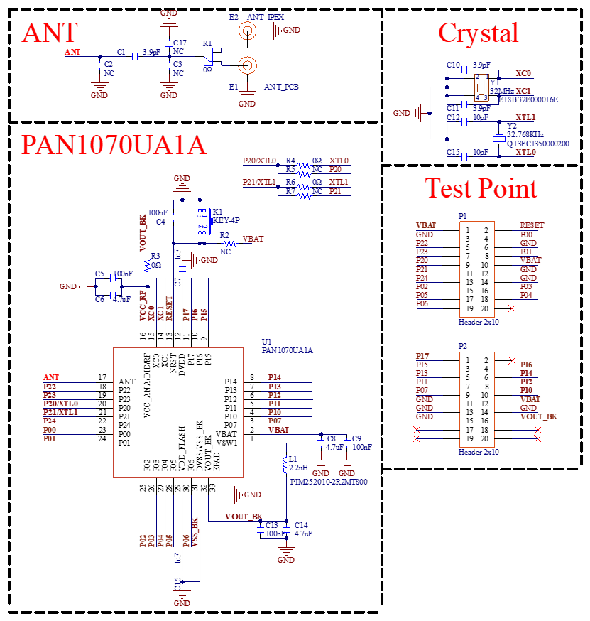
QFN32封装核心板原理图¶
2.2 电源模块¶
PAN10xx EVB开发板可选择使用以下两种供电方式之一：
5V的USB供电；
3V的CR2032纽扣电池供电；
EVB开发板电源模块原理图如下：
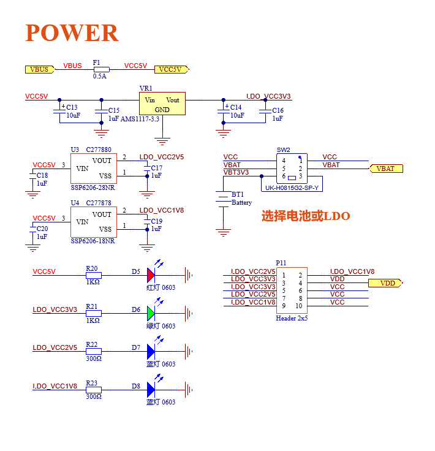
电源模块原理图¶
EVB开发板左侧有两个USB-Type-C接口U5与U7，它们的电源引脚均与EVB的5V电源网络连在一起；除此之外，二者还有以下区别：
U7为普通USB接口，使用跳线帽将EVB底板的USBDM/USBDP分别与SoC的对应引脚相连，即可使用PAN10xx SOC的USB模块；U5为USB转UART模块的USB端接口，使用跳线帽将EVB底板的TX0/RX0分别与SoC对应的引脚相连，即可通过USB转串口模块，实现PAN10xx SOC的UART0与PC进行通信；注：在实际使用过程中，选用任意一个USB口供电即可，但需注意，板载电源切换开关应拨动至LDO档位。
一种典型的供电方法如下图所示：
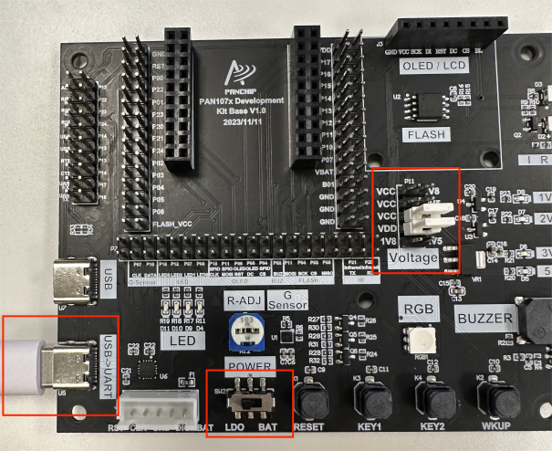
供电方式示意图¶
其中：
拨动开关SW2左拨到LDO档位；
使用跳线帽短接图右侧排针，作用是将电源分别连接至VCC（即核心板系统电源）、VDD（即开发板外设供电），电压分别有3.3V、2.5V、1.8V可选。
电源网络的三个LDO模块，分别输出3.3V、2.5V、1.8V，故VCC（核心板系统电源）、VDD（开发板外设供电）可以各自分别选择所需要的电压。
另外，若希望开发板由左下角纽扣电池供电，则拨动开关SW2往右拨到BAT档位即可。
2.3 SWD调试接口¶
开发板提供了单排针接口用于连接J-LINK实现SWD调试和程序下载功能，该排针接口位于整板左上方。
一种典型的使用方法如下图所示：
JLINK下载器插到SWD接口
J4；供电方式参考上文。
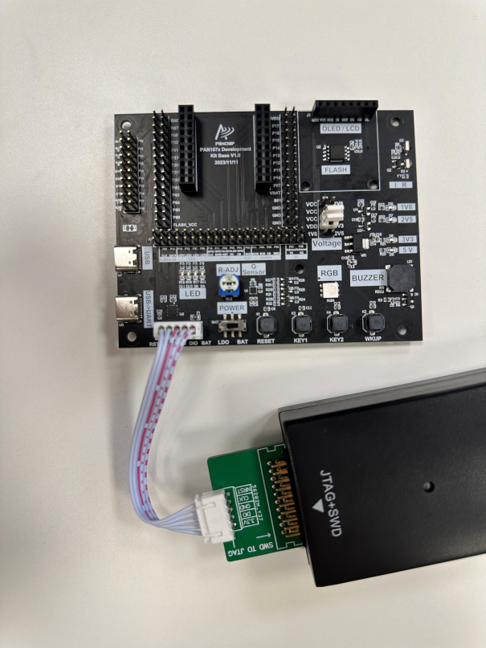
JLink连线¶
2.4 USB转串口模块¶
PAN10xx SoC的P16、P17引脚可通过软件配置成UART串口功能，然后通过CH343模块转为USB_Type-C接口。
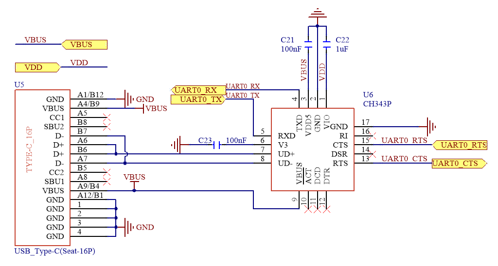
USB转UART模块原理图¶
USB转UART模块使用U5 USB_Type-C接口，并且使用跳线帽短接排针对应的引脚，如下图所示(流控还需用跳线帽将CTS0、RTS0连接到SOC)：
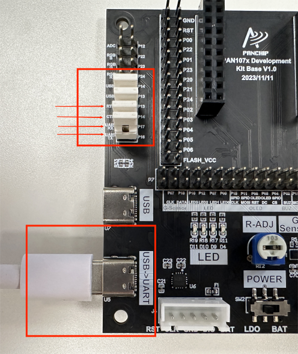
USB转UART模块实物接线图¶
2.5 RGB灯¶
开发板搭载单颗RGB灯，可由芯片的三个IO通过晶体管控制，实现亮灭或渐变等效果。
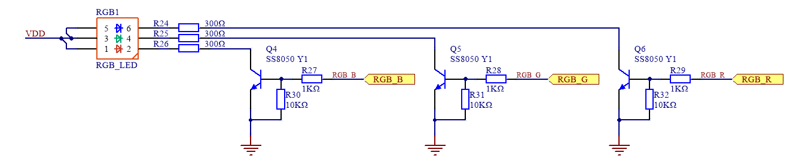
RGB灯原理图¶
为使用此模块功能，需要将跳线帽短接排针上对应的三对引脚，如下图所示：
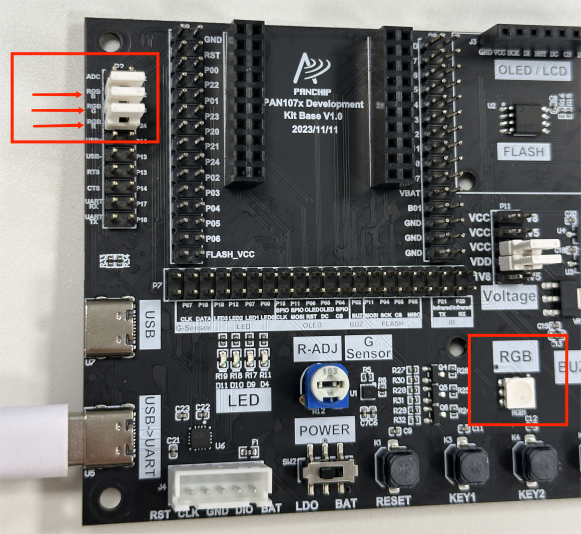
RGB灯实物图¶
2.6 USB模块¶
开发板提供一个USB_Type-C接口，原理图如下:
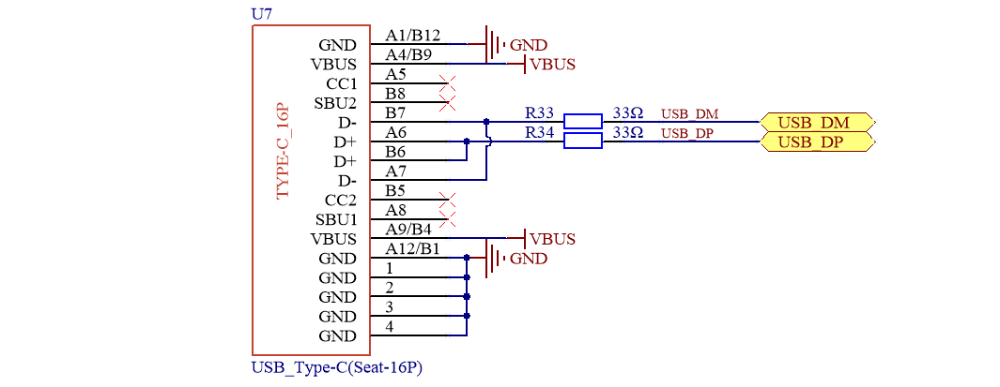
USB模块外围电路原理图¶
为使用此模块功能，需要将跳线帽短接排针上对应的引脚，如下图所示：
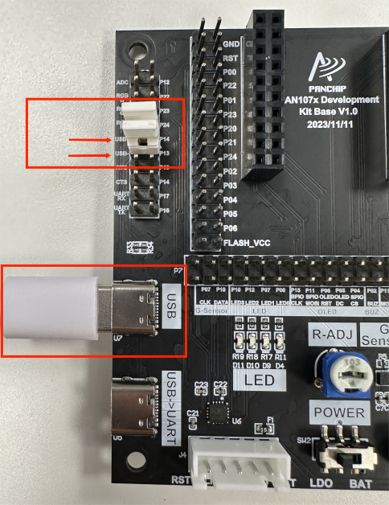
USB模块外围电路实物图¶
2.7 运动传感器¶
开发板搭载了三轴加速度计传感器SC7A20，提供了IIC接口与主控芯片进行通信，IIC通信地址为：0X18，原理图如下：
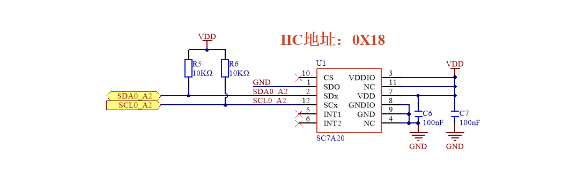
G-Sensor 模块原理图¶
为使用此模块功能，需要将跳线帽短接排针上对应的引脚，如下图所示：
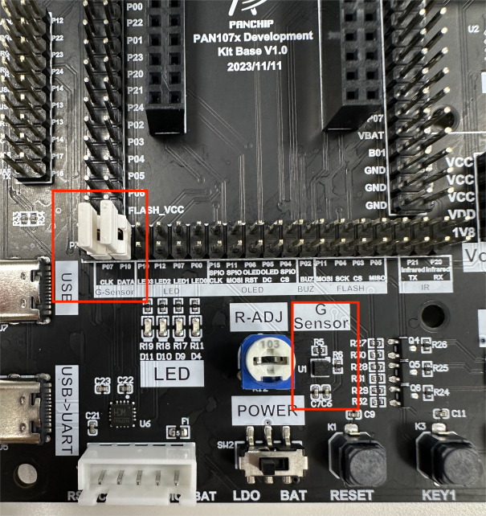
G-Sensor 模块实物接线图¶
2.8 OLED显示屏¶
开发板搭载了常见的0.96寸、七针接口、128*64分辨率的OLED显示屏模块接口，OLED模块使用SSD1306显示驱动芯片进行控制，具备内部升压，对外默认提供三线SPI接口与主控芯片进行通信，其原理图如下：
OLED模块原理图¶
使用此模块功能之前，需要使用跳线帽短接OLED功能对应的排针，如下图所示：
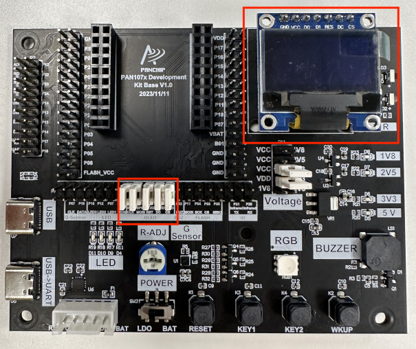
OLED模块接线实物图¶
注：OLED显示屏模块与板载SPI FLASH芯片共用主控芯片的SPI接口。
2.9 外部SPI FLASH¶
开发板搭载了具备1MB存储空间的外部FLASH芯片GD25WQ80，该芯片与板载显示屏模块共用主控芯片的SPI接口，其原理图如下：
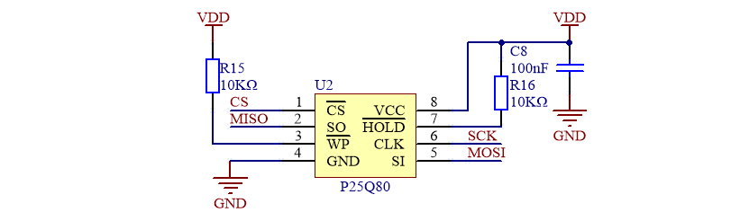
外部 SPI Flash 模块原理图¶
为使用此模块功能，需要将跳线帽短接排针上对应的引脚，如下图所示：
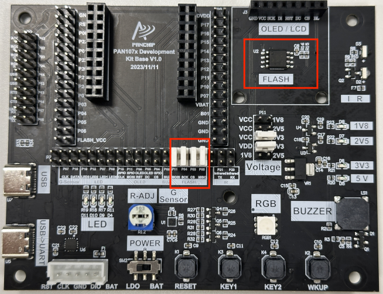
外部 SPI Flash 模块实物接线图¶
2.10 蜂鸣器¶
开发板搭载了贴片无源蜂鸣器电路用于声音提示、报警等功能，可由PAN10xx SoC通过PWM输出2KHz~3KHz频率的方波控制发声，其原理图如下：
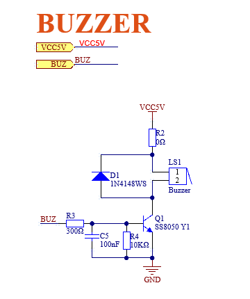
蜂鸣器模块原理图¶
为使用此模块功能，需要将跳线帽短接排针上对应的引脚，如下图所示：
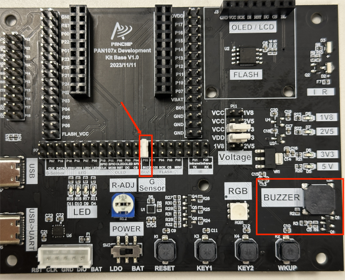
蜂鸣器模块实物接线图¶
2.11 可调电阻¶
开发板搭载了一个最大阻值为10K的可调电阻与0欧姆精密电阻串联接入电源电路，在LDO提供VDD电源的系统中，可在ADC采样点产生0V~ VDDV的可调电压，用于测试PAN10xx SoC的ADC（模数转换器）采样功能，其原理图如下：
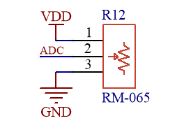
可调电阻原理图¶
为使用此模块功能，需要将跳线帽短接排针上对应的引脚，如下图所示：
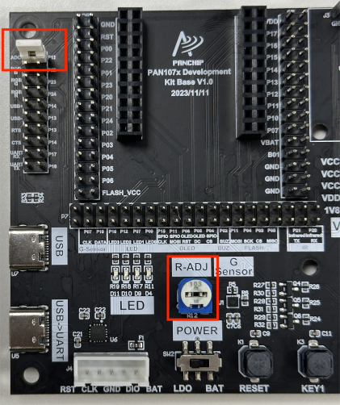
ADC模块示例接线图¶
2.12 轻触按键¶
开发板底板配备了4个按键：2个普通GPIO按键、1个低功耗唤醒按键和1个复位按键。其中：
按键
K1可通过跳线帽连接至PAN10xx SoC的RST引脚，用于控制芯片复位；按键
K2可通过跳线帽连接至PAN10xx SoC的P02引脚，在PAN10xx SoC处于待机（Standby）模式下时，P56引脚可被配置为低功耗唤醒引脚。按键
K3、K4连接至PAN10xx SoC的GPIO口P06、P12，当做普通按键使用；
按键，原理图如下：
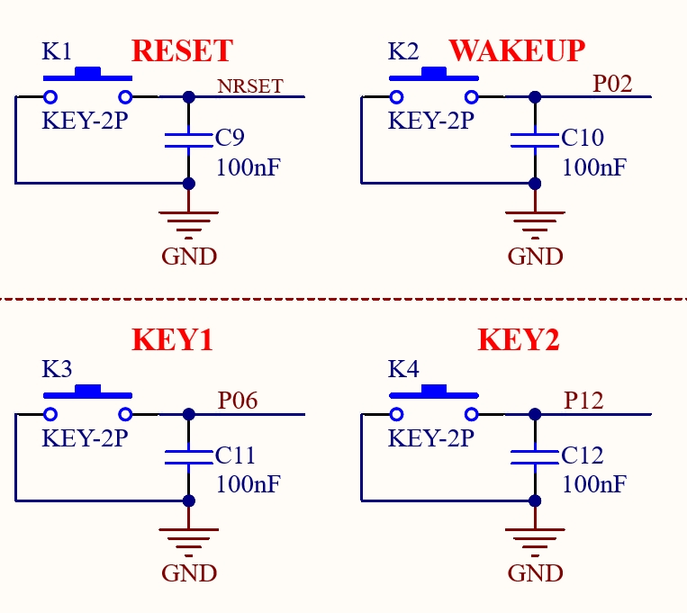
按键原理图¶
为正常使用所有按键，需要将GPIO内部上拉电阻开关打开，PCBA如下图所示：
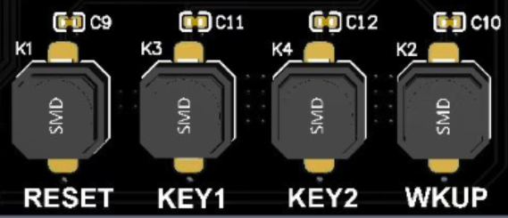
按键图¶